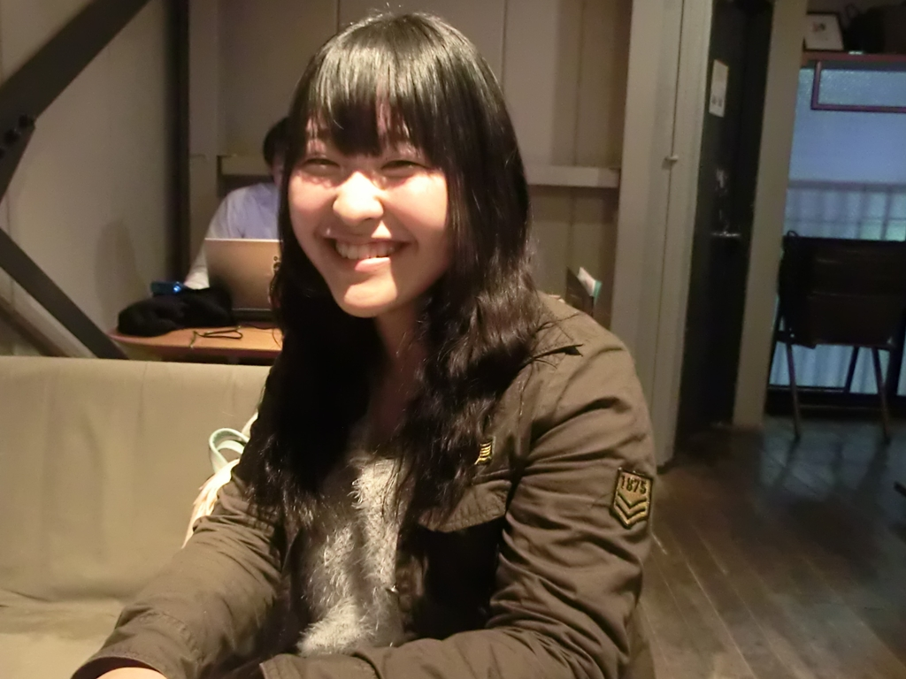
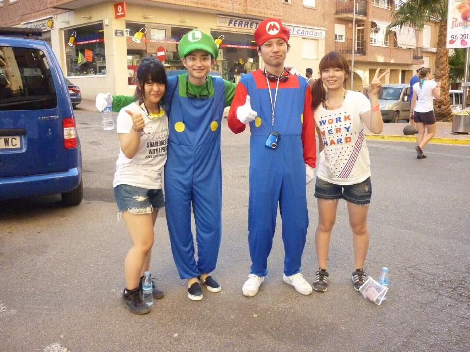

総合学術サークルCloud.A 参加者インタビュー
日本は美しい国か？
| 所属 | 昭和女子大学 人間文化学部 |
|---|---|
| 専攻 | 日本語教育論 |
日本語教育専攻を志望しています。外国人に対して日本語を教えることの理論について勉強する分野です。例えば、外国人に日本語を教えるためのシラバスを作ったり、実際に留学生に教えたりします。
---なぜそれに興味を？
2年生の時に受けた社会言語学の授業が面白かったからです。日常のシチュエーションごとに言語コミュニケーションをパターン化していく授業で、例えば謝罪表現のシチュエーションで「先に謝る」「言い訳する」「理由を説明する」等のパターンで分けて、それぞれどんな結果になるかを考えました。そのパターンごとの差異を学習する中で、「人の考え方や行動パターンは一人一人違うんだ」ということを強く実感して、異なる言語間でその違いを伝え合う日本語教育という分野に興味を持ちました。
子ども国会という団体で中高生と社会問題などについて議論するイベントを開催しています。例えば「結婚」というテーマで、自分たちや参加者が持つ結婚観について意見を出し合ったり、自分が思う幸せとは何かについて議論しました。
---なぜそれを始めたのですか？
1年生の時に所属していた部活を辞めて時間ができたためです。部活は月に1回の大会と週に4回以上の練習が忙しすぎて、自分のイメージしていた大学生活と乖離してきたことを感じたため辞めました。部活一筋の大学生活ではなく、ちゃんと勉強も両立したかったため、それに近い活動ができる子ども国会の活動に参加しました。
---なるほど、確かに大学2年生くらいになって自分のイメージしていた大学生活と違う、と部活やサークルを辞めて新しく学外の団体を探す人は多いですよね。Cloud.Aにもそうやって参加してきた方が沢山います。
そうですね、後は他にも、とにかく大学生活を後悔しないように、色んなイベント等に顔を出しています。例えば3rdクラスというイベントで元NHKアナウンサーから「魅力溢れる女子」になるための呼吸法や発声練習を教わったり、起業家志望の学生が集まるイベントで講演を聞いたりもしました。それから、スペインのトマト祭りに行ってみたり、友達と3人で海老名パーキングから徳島までヒッチハイクしたりもしましたね。
---積極的に様々なイベントに参加しているんですね！
第24回の「日本は美しい国か」です。よく日本は素晴らしい、美しい国だと言いますが、それは本当なんだろうかと思って勉強会を企画しました。ここで私は発表する側でしたが、言いたいことをまとめるのに苦労しました。初めてに問いを立て、結論に至るまでの根拠を順序立てて組み立てることや、プレゼンテーションの資料をうまく作ることが難しかったです。ただ、そこで運営メンバーからプレゼン作成の際に多くのアドバイスをいただき、長い時間かけて言語化のサポートをしてくれたので、なんとか形にすることができました。発表などはとても苦手なので緊張しましたが、そういった初心者でも気軽に挑戦できる環境とサポート体制があるので、人前での発表などを上達させたい方にはオススメです！
私からは授業で読んだ小説をご紹介します。1冊目は夏目漱石の『三四郎』です。登場人物に美禰子という人物がいます。このキャラクターが自分と似ていたので好きです。彼女は自由奔放ですが、最終的には自分の好きな人ではなく、家の人が決めた相手と結婚します。普段は周囲を振り回すものの、最後には伝統やしきたりに従うんです。その間に彼女の迷いや葛藤が感じられて、感情移入してしまいました。
---なるほど。
2冊目は中勘助『銀の匙』です。前編と後編に分かれていて、作者の文体が変わっているところに惹かれました。内容は単に病気がちな少年の日常を淡々と書いているに過ぎないのですが、音読すると情景描写がリアルに頭に浮かんできて、1つ1つの言葉が大切にされているように感じます。この2冊が特にオススメです！
---ありがとうございました！